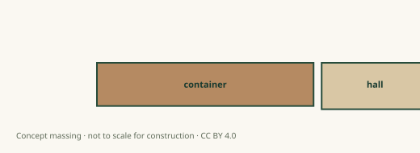

Shared community building · Two containers + hall · community · common lodge concept
Common lodge · Lodge
The shared hearth: kitchen, hall, workshop and the gathering glade.

See Common lodge on the hamlet map
Share this home: homes/Lodge-3-community/ · orientation · main view · siting

- Use
- Shared community building
- Approximate size
- ~124 m² clear floor area · ~142 m² footprint
- Principal facade
- west · ~270°
- Placed
- 275 m east, 115 m south of the fictional map origin
- Shoreline
- ~197 m
- Wetland
- ~71 m
Orientation #
The screened porch and gathering hall face west into the gathering glade, while the entry, drop-off and accessible ramp face east toward the parking area.
Main view #
The gathering glade and the mixed forest beyond, seen from the screened porch and the hall's west glazing. Bearing ~279°, ~20 m to gathering glade. mostly wooded, with deciduous trees that open the view in winter.
Through maple, birch and hemlock at the edge of the glade.
Nearby homes #
Cabin E is about 41 m west-south-west and may be glimpsed at the edge of the glade through cedar; Cabin C is about 112 m west and only visible in winter. In the view cone: Cabin C at ~112 m; Cabin E at ~41 m.
Path and entry #
The accessible arrival path comes from the drop-off to the east ramp. The glade path leaves the west porch. Neither crosses a home's private view.
Winter #
Hemlock and cedar keep the glade edge green in winter. The hall's clerestories bring low winter light into the gathering space, and the porch stays usable with screens and a windbreak.
Siting #
All illustrative checks pass. These are project assumptions, not legal setbacks or a permit.
- 196.9 m from the shoreline (setback 30 m)
- 71 m from the wetland (buffer 30 m)
- Inside the parcel
- 33.8 m from East outcrop (buffer 8 m)
- 74.8 m from a drainage channel (buffer 10 m)
- Natural ground slope 7.8% (limit 22%)
- Building bench cut/fill 0.34 m (limit 1.6 m)
- Crane reach 20.2 m (limit 24 m)
- Ramp foot 3.8 m from an emergency or access lane (limit 50 m)
- Entry 8.5 m from a walking path (limit 18 m)
- Ramp foot 2.4 m from a walking path (limit 18 m)
Design note #
The lodge is the social centre, so it gets the most accessible arrival, the universal washroom, the shared kitchen and the workshop. It is deliberately at the edge, near parking and services, not in the quietest part of the woods.
Drawings and next steps #
Lodge drawings · Look inside Common lodge · Show Common lodge on the hamlet map · Design Lab
This page is a brief, not a construction drawing. No photograph, stock image or proprietary design is reproduced.